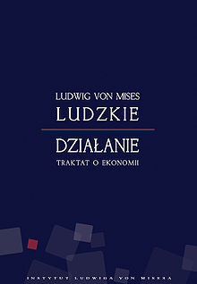
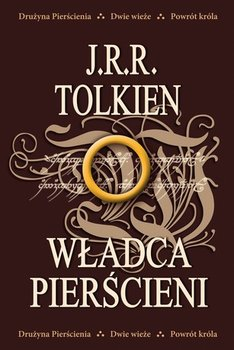

|  |  | ||
|---|---|---|---|
| Ludzkie działanie | Władca pierścieni | Ekonomia dla każdego | Ekukacja wolna i przymuszona |
| Książka, która czekała na polskie wydanie prawie 60 lat (pierwsze wydanie oryginału Human Action 1949). Opus magnum nestora austriackiej szkoły ekonomii Ludwiga von Misesa. Chłodna, rzeczowa rozprawa z socjalizmem, interwencjonizmem i wszelkimi odmianami pseudoekonomii. | W zamierzchłych czasach kowale elfów wykuli Pierścienie Mocy. Lecz Mroczny Władca, stworzył w tajemnicy Jedyny Pierścień, aby rządził pozostałymi. Ale Pierścień zniknął na wiele wieków w Śródziemiu, zanim trafił w ręce hobbita, którego przeznaczeniem stało się jego zniszczenie... | Mimo kilkunastu lat tzw. transformacji ustrojowej, obowiązującą doktryną społeczno-ekonomiczną pozostaje w polsce socjalizm czyli system, w którym państwo jest wszystkim, a obywatel nikim. Otwarcie nikt tego rzecz jasna nie twierdzi, w rzeczywistości jednak społeczeństwo – w sferze gospodarczej – podporządkowane jest woli urzędników. | „Indywidualizm jest tłamszony uczeniem dostosowywania się do „grupy”. (…) W rezultacie dzieci są uczone, by doszukiwać się prawdy raczej w opinii większości, niż we własnym, niezależnym rozumowaniu lub w opiniach specjalistów najlepszych w danej dziedzinie. |
| Więcej >>> | Więcej >>> | Więcej >>> | Więcej >>> |
Książka, która czekała na polskie wydanie prawie 60 lat (pierwsze wydanie oryginału Human Action 1949). Opus magnum nestora austriackiej szkoły ekonomii Ludwiga von Misesa. Chłodna, rzeczowa rozprawa z socjalizmem, interwencjonizmem i wszelkimi odmianami pseudoekonomii.
Książka, która czekała na polskie wydanie prawie 60 lat (pierwsze wydanie oryginału Human Action 1949). Opus magnum nestora austriackiej szkoły ekonomii Ludwiga von Misesa. Chłodna, rzeczowa rozprawa z socjalizmem, interwencjonizmem i wszelkimi odmianami pseudoekonomii.
Książka, która czekała na polskie wydanie prawie 60 lat (pierwsze wydanie oryginału Human Action 1949). Opus magnum nestora austriackiej szkoły ekonomii Ludwiga von Misesa. Chłodna, rzeczowa rozprawa z socjalizmem, interwencjonizmem i wszelkimi odmianami pseudoekonomii.
Książka, która czekała na polskie wydanie prawie 60 lat (pierwsze wydanie oryginału Human Action 1949). Opus magnum nestora austriackiej szkoły ekonomii Ludwiga von Misesa. Chłodna, rzeczowa rozprawa z socjalizmem, interwencjonizmem i wszelkimi odmianami pseudoekonomii.
- by Ksiazkowo. All Rights Reserved.
All content on this web site is the property of the company Ksiazkowo.